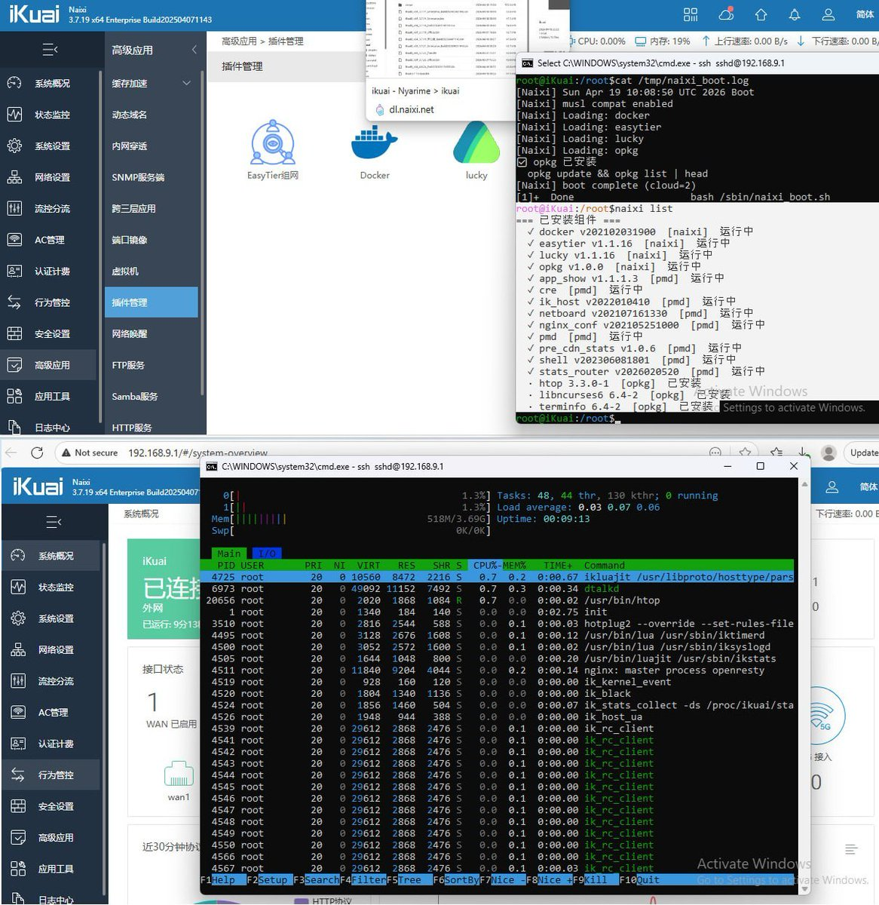
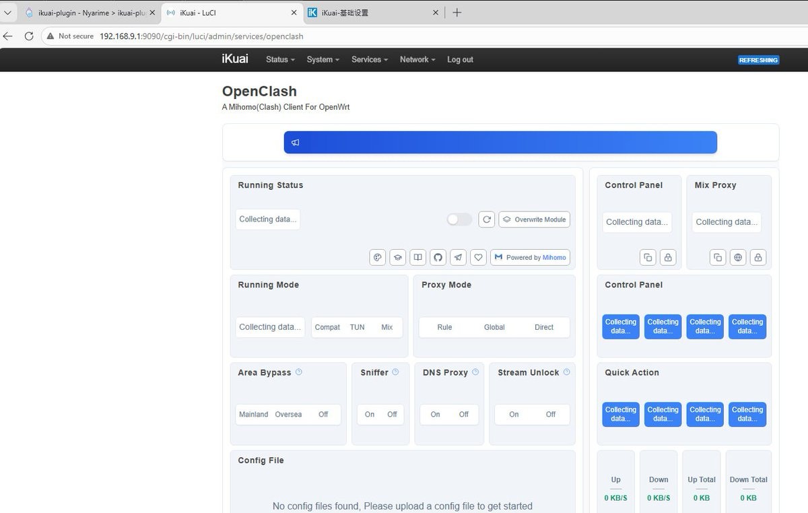
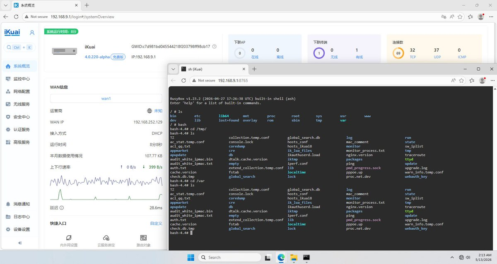
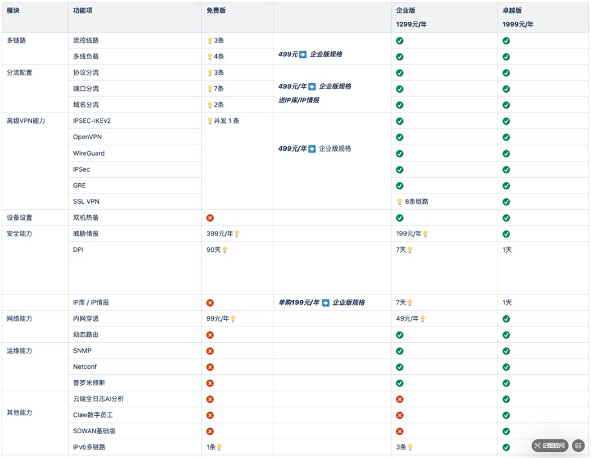

折腾过软路由的推友应该都认识爱快系统，包括之前我借助pmd适配了一些原生插件，也能让OpenWRT插件和LuCI在上面跑，总的来说有点像在做卓易通（当然因为全讯汇聚，也就是爱快官方找上门了就停止了，还好人家公司格局大不然就成被告了
iKuaiOS现在已经4.0Beta，不过pmd挂载方式也变了，目前只允许Docker插件。我能感觉到他们团队并不想放root权限，以及对原生（二进制）插件进行签名校验。包括在研发团队的许可尝试突破了新系统的root权限，只能说加固得很彻底，能看到爱快官方对于盗版的打击力度之大
因此我比较好奇一件事，路由上跑插件是不是刚需？好像大部分人用爱快做流控然后用OpenWRT跑Clash的较多，如果说NAS是家庭娱乐网关，那将Router+NAS会不会是更好的选择？我看飞牛OS那套插件生态（原生+Docker）就很不错，甚至还有第三方应用商店支持。当然已经实测ShellClash和Mihomo内核都可以在iKuai上正常工作，其实像Apple那样做个App Store审核插件也不是件坏事
如果说哪一天爱快开放root和第三方插件市场共存，那我觉得是更上一层楼的事情。此外，爱快销售那边也有小道消息说要单独卖企业版授权，除了买硬件送OEM版外，还有通过订阅获得与官方企业硬件一样的功能，我认为值得期待
iKuaiOS现在已经4.0Beta，不过pmd挂载方式也变了，目前只允许Docker插件。我能感觉到他们团队并不想放root权限，以及对原生（二进制）插件进行签名校验。包括在研发团队的许可尝试突破了新系统的root权限，只能说加固得很彻底，能看到爱快官方对于盗版的打击力度之大
因此我比较好奇一件事，路由上跑插件是不是刚需？好像大部分人用爱快做流控然后用OpenWRT跑Clash的较多，如果说NAS是家庭娱乐网关，那将Router+NAS会不会是更好的选择？我看飞牛OS那套插件生态（原生+Docker）就很不错，甚至还有第三方应用商店支持。当然已经实测ShellClash和Mihomo内核都可以在iKuai上正常工作，其实像Apple那样做个App Store审核插件也不是件坏事
如果说哪一天爱快开放root和第三方插件市场共存，那我觉得是更上一层楼的事情。此外，爱快销售那边也有小道消息说要单独卖企业版授权，除了买硬件送OEM版外，还有通过订阅获得与官方企业硬件一样的功能，我认为值得期待



